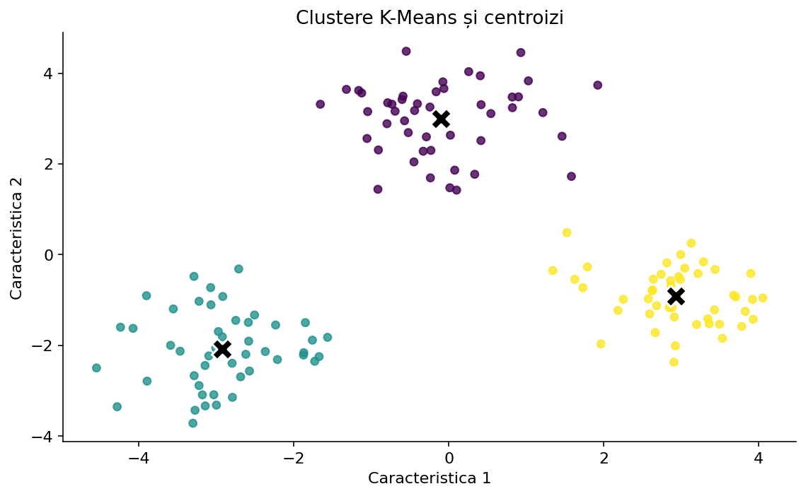
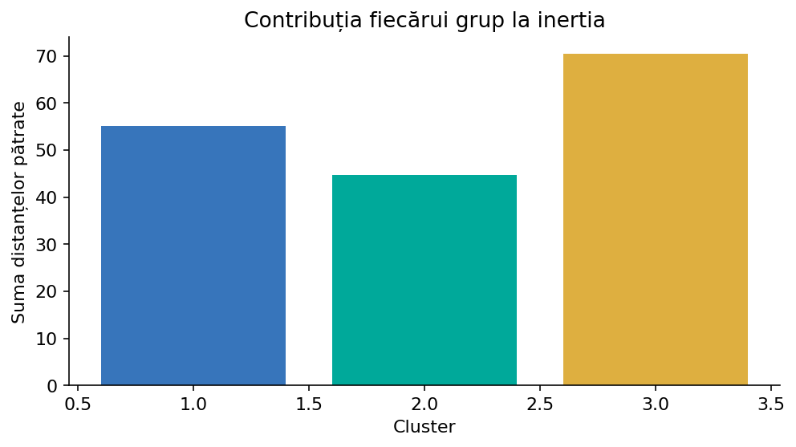
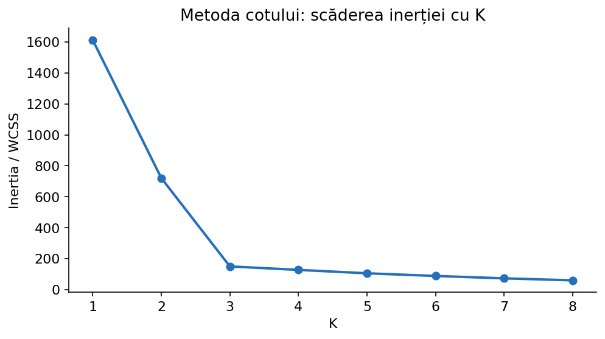
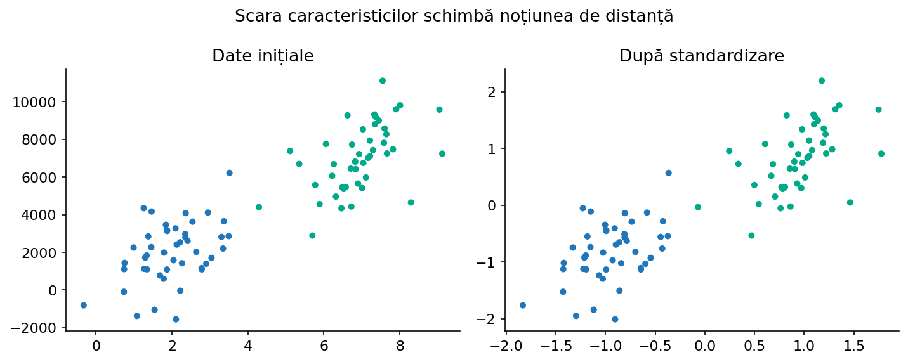
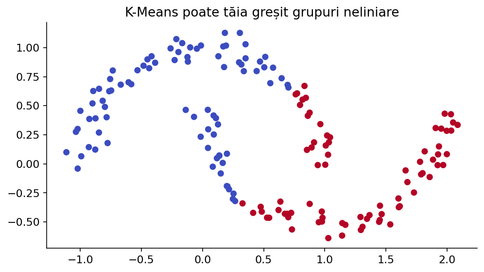

De la distanța dintre două puncte până la gruparea unui set de date real. Construim algoritmul cu mâna, urmărim două etape repetitive, apoi îl folosim corect în scikit-learn.
Deschide laboratorul pe tot ecranul ↗Imaginează-ți o colecție de rezultate ale elevilor la două probe, fără să știm dacă aparțin unor grupe diferite. Fiecare elev devine un punct (scor_proba_1, scor_proba_2). O grupare poate evidenția tipare: puncte apropiate pot descrie profiluri asemănătoare, dar grupurile nu sunt etichete oficiale și nu trebuie interpretate automat drept niveluri de competență.
În învățarea supervizată știm răspunsul corect pentru fiecare exemplu; aici nu avem eticheta y. K-Means primește doar matricea caracteristicilor X și caută K centre (centroizi). Fiecare observație este asociată celui mai apropiat centru.

Pentru n observații și d caracteristici, fiecare observație este un vector xᵢ = (xᵢ₁, …, xᵢd). Pentru K grupuri avem centrele μ₁, …, μK. În plan, distanța euclidiană este d(A,B) = √((xA − xB)² + (yA − yB)²).
Exemplu complet: A=(1,2), C₁=(1,1), C₂=(5,4). Distanțele pătrate sunt 1 și 20; A este atribuit lui C₁. Compararea distanțelor pătrate este suficientă și evită extragerea rădăcinii. Pentru mai multe caracteristici adunăm pătratele diferențelor pe fiecare coordonată.
from math import sqrt def distanta_patrata(a, b): total = 0 for i in range(len(a)): total += (a[i] - b[i]) ** 2 return total punct = [1, 2] centre = [[1, 1], [5, 4]] for i, centru in enumerate(centre): print(i, distanta_patrata(punct, centru))
K-Means caută să minimizeze suma distanțelor pătrate de la fiecare observație la centrul grupului său. Această sumă se numește inertia sau WCSS (Within-Cluster Sum of Squares): J = Σᵢ ||xᵢ − μc(i)||², unde c(i) este indicele clusterului atribuit observației i.
Valorile mai mici ale inerției indică o potrivire mai compactă pe aceleași date și cu același K. Dacă K crește, inerția de antrenare nu poate crește pentru soluția optimă; de aceea nu alegem automat valoarea K cu inerția minimă: pentru K=n inerția poate deveni zero, fără să avem un model util.

Să lucrăm manual cu punctele A=(1,1), B=(1,3), C=(5,4), D=(6,4) și K=2. Alegem inițial μ₁=(1,1), μ₂=(6,4). Aceasta este o alegere posibilă, nu un rezultat garantat. La altă inițializare se poate obține o împărțire diferită.
În implementarea simplă alegem K puncte distincte din date. În practică, inițializarea k-means++ împrăștie centrele inițiale pentru a evita cât mai des pornirea din aceeași zonă. Mai multe porniri independente ajută la evitarea unui minim local nefavorabil.
puncte = [[1, 1], [1, 3], [5, 4], [6, 4]] centre = [puncte[0][:], puncte[3][:]] print(centre) # [[1, 1], [6, 4]]
Calculăm pentru fiecare observație distanța până la fiecare centroid și alegem distanța minimă. Pentru B=(1,3), d²(B, μ₁)=4, iar d²(B, μ₂)=26, deci B merge în primul grup. Pentru C=(5,4), d²(C, μ₁)=25 și d²(C, μ₂)=1, deci merge în al doilea.
În laborator, atunci când apeși „Atribuie”, tabelul arată toate distanțele, nu numai alegerea finală. Culorile punctelor se schimbă pentru a indica noile grupuri; centroizii rămân în poziția veche până la următorul pas.
def atribuie(puncte, centre): etichete = [] for p in puncte: distante = [distanta_patrata(p, c) for c in centre] etichete.append(distante.index(min(distante))) return etichete print(atribuie(puncte, centre)) # [0, 0, 1, 1]
Centrul unui grup devine media coordonatelor tuturor punctelor atribuite acelui grup. Pentru A=(1,1) și B=(1,3), noul centroid este ((1+1)/2,(1+3)/2)=(1,2). Pentru C=(5,4) și D=(6,4), centrul devine (5,5;4).
De ce media? Pentru distanța euclidiană la pătrat, suma pătratelor distanțelor până la un centru este minimă când centrul este media punctelor. Este aceeași proprietate ca minimizarea erorii pătratice în regresie.
def medie_grup(puncte, etichete, grup, centru_vechi): membri = [p for p, lab in zip(puncte, etichete) if lab == grup] if not membri: return centru_vechi[:] return [sum(p[j] for p in membri) / len(membri) for j in range(len(membri[0]))] etichete = atribuie(puncte, centre) centre = [medie_grup(puncte, etichete, j, centre[j]) for j in range(len(centre))] print(centre) # [[1.0, 2.0], [5.5, 4.0]]
După recalcularea centrelor, reluăm atribuirea. Dacă nicio observație nu își mai schimbă clusterul sau centroizii se deplasează foarte puțin, ne oprim. Fiecare etapă de atribuire și actualizare nu crește funcția obiectiv pentru obiectivul clasic al K-Means.
Algoritmul converge la un rezultat stabil (un minim local sau un punct staționar), nu neapărat la cea mai bună împărțire posibilă pentru toate inițializările. Pentru exercițiile manuale, notează separat starea inițială, etichetele după atribuire și centrele după actualizare.
def kmeans_simplu(puncte, centre, max_iter=20): centre = [c[:] for c in centre] for pas in range(max_iter): etichete = atribuie(puncte, centre) noi = [medie_grup(puncte, etichete, j, centre[j]) for j in range(len(centre))] print('Pas', pas + 1, 'grupuri', etichete, 'centre', noi) if noi == centre: break centre = noi return centre, atribuie(puncte, centre) print(kmeans_simplu(puncte, [[1, 1], [6, 4]]))
Dacă niciun punct nu este atribuit unui centru, media grupului nu există. Într-o implementare didactică putem păstra vechiul centru sau reinițializa acel centru. În codul de mai sus păstrăm valoarea veche; bibliotecile folosesc tratări interne mai elaborate.
Dacă două centre sunt la aceeași distanță de un punct, trebuie stabilită o regulă deterministă, de exemplu alegerea centrului cu indicele cel mai mic. În testarea unui algoritm, egalitatea nu trebuie lăsată la voia întâmplării. Identificatorii clusterelor 0, 1, … nu reprezintă o ordine a calității.
k-means++ alege primul centroid dintre observații, apoi preferă puncte aflate departe de centrele deja alese (prin distanța minimă pătrată). Este o metodă probabilistică: nu garantează soluția globală, dar reduce frecvent inițializările slabe.
Parametrul n_init stabilește de câte ori pornește algoritmul cu inițializări independente și păstrează varianta cu inertia cea mai mică. În versiunile actuale scikit-learn, n_init="auto" înseamnă o pornire pentru k-means++ și zece pentru init="random". Pentru experimente comparabile, poți scrie explicit n_init=10 și random_state=42.
from sklearn.cluster import KMeans X = [[1, 1], [1, 3], [5, 4], [6, 4]] model = KMeans(n_clusters=2, init='k-means++', n_init=10, random_state=42) model.fit(X) print(model.cluster_centers_) print(model.labels_) print(model.inertia_)
Calculăm inertia pentru K=1,2,3,... și reprezentăm valorile grafic. Uneori curba scade brusc până la un număr de clustere, apoi descrește lent. Schimbarea aceasta este numită „cot”. Nu este un test matematic universal, ci un indiciu vizual.
La seturi în care grupurile nu sunt clare, cotul poate lipsi. Compară mai multe valori ale lui K, uită-te la datele inițiale și la scopul aplicației. Un număr mare de grupuri nu înseamnă automat o descoperire mai bună.

from sklearn.cluster import KMeans from sklearn.datasets import make_blobs X, _ = make_blobs(n_samples=150, centers=3, cluster_std=0.6, random_state=4) for k in range(1, 7): model = KMeans(n_clusters=k, n_init=10, random_state=4) model.fit(X) print(k, round(model.inertia_, 2))
Pentru fiecare punct calculăm a: distanța medie până la celelalte puncte din propriul cluster, și b: cea mai mică distanță medie până la punctele unui alt cluster. Definim s=(b−a)/max(a,b). Valorile apropiate de 1 indică puncte bine separate, cele aproape de 0 indică granițe neclare, iar valorile negative pot indica atribuiri nepotrivite.
Silhouette este o măsură internă, nu demonstrează că grupurile descoperite corespund categoriilor semnificative pentru problemă. Cu un singur cluster, scorul nu este definit; în scikit-learn avem nevoie de cel puțin două grupuri și de mai puține grupuri decât observații.
from sklearn.metrics import silhouette_score from sklearn.cluster import KMeans from sklearn.datasets import make_blobs X, _ = make_blobs(n_samples=120, centers=3, random_state=3) for k in [2, 3, 4, 5]: labels = KMeans(n_clusters=k, n_init=10, random_state=3).fit_predict(X) print(k, round(silhouette_score(X, labels), 3))
Imaginează-ți un tabel cu „vârsta” (12–18 ani) și „durata de utilizare” (0–10000 secunde). Dacă aplicăm direct distanța euclidiană, diferențele dintre durate vor domina aproape complet distanțele. StandardScaler transformă fiecare caracteristică, folosind media și deviația standard calculate doar pe setul de antrenare.
K-Means folosește media drept centru, iar aceasta este sensibilă la valori extreme. Un singur punct foarte îndepărtat poate deplasa centroidul. Înainte de aplicare verifică unitățile, tipurile, outlierii și dacă măsura distanței are sens pentru problema ta.

from sklearn.pipeline import make_pipeline from sklearn.preprocessing import StandardScaler from sklearn.cluster import KMeans X = [[14, 1000], [15, 1200], [14, 1100], [17, 9500], [16, 9200], [17, 9000]] model = make_pipeline(StandardScaler(), KMeans(n_clusters=2, random_state=0, n_init=10)) print(model.fit_predict(X))
Dacă o caracteristică este „culoare” cu valorile roșu, verde, albastru, nu putem folosi în mod justificat direct codurile 0,1,2: distanța dintre roșu și albastru ar deveni de două ori mai mare decât dintre roșu și verde, deși această relație nu există în date.
Pentru câteva categorii nominale poate fi utilizată codificarea one-hot, după care alegerea metricii și importanța grupurilor de variabile trebuie discutate atent. Pentru date exclusiv categorice există și metode dedicate, cum este k-modes, dar nu facem afirmația că K-Means standard le tratează direct. Pentru date mixte, numeric + categoric, costul și interpretarea distanței rămân problema centrală.
from sklearn.preprocessing import OneHotEncoder X = [['roșu'], ['albastru'], ['verde']] encoder = OneHotEncoder(sparse_output=False) print(encoder.fit_transform(X))
K-Means favorizează grupuri aproximativ compacte și asemănătoare ca geometrie, dacă lucrăm cu distanța euclidiană. Două semiluni, inele concentrice sau grupuri cu densități foarte diferite pot fi separate într-un mod care nu corespunde structurii intuitive.
Nu putem presupune că orice cluster este o clasă reală. Două grupuri geometric apropiate se pot datora unui efect al scalei; unele caracteristici pot fi irelevante. Compară cu alte metode atunci când datele nu sunt potrivite pentru presupunerile K-Means.

n_clusters: numărul K de centroizi; se alege din analiza problemei și validare. init: „k-means++”, „random”, centre introduse explicit sau o funcție; schimbă punctul de pornire. n_init: numărul de inițializări independente din care se alege inertia minimă. max_iter: limita iterațiilor pentru fiecare pornire.
tol: pragul relativ pentru deplasarea centrelor, determinând oprirea; random_state: face inițializarea reproductibilă. algorithm: „lloyd” reprezintă algoritmul clasic; „elkan” poate accelera unele situații folosind inegalitatea triunghiului, dar consumă mai multă memorie. copy_x controlează modificările temporare ale intrării; verbose afișează informații de diagnostic.
După fit, atributele cluster_centers_, labels_, inertia_, n_iter_ arată rezultatul. predict(X_new) atribuie noilor observații cel mai apropiat centroid; transform(X_new) produce distanțele către centroizi. Modelul nu atribuie o semnificație semantică acestora.
from sklearn.cluster import KMeans from sklearn.datasets import make_blobs X, _ = make_blobs(n_samples=90, centers=3, random_state=17) model = KMeans(n_clusters=3, init='k-means++', n_init=10, max_iter=300, tol=1e-4, algorithm='lloyd', random_state=17) model.fit(X) print('Centri:', model.cluster_centers_) print('Iterații:', model.n_iter_) print('Distanțe noi:', model.transform(X[:2]))
Segmentare de imagini: fiecare pixel RGB este un vector cu trei caracteristici; K-Means poate grupa culori apropiate și apoi înlocui fiecare pixel cu culoarea centroidului. Explorare de date: descoperirea grupurilor înainte de alegerea unui model predictiv. Compresie de reprezentări: un număr redus de centroizi poate aproxima multe valori.
K-Means poate fi un pas de preprocesare înaintea unui model supravegheat, dar centrele trebuie estimate doar din datele de antrenare ale fiecărei împărțiri atunci când există riscul folosirii indirecte a testului. Nu presupune automat că un cluster descrie o categorie reală a datelor.
import numpy as np from sklearn.cluster import KMeans # Imagine fictivă cu 4 pixeli RGB pixeli = np.array([[240, 20, 20], [250, 15, 18], [20, 30, 240], [24, 20, 250]]) model = KMeans(n_clusters=2, n_init=10, random_state=0) etichete = model.fit_predict(pixeli) compresie = np.rint(model.cluster_centers_[etichete]).astype(int) print(compresie)
K-Means nu primește y și nu poate fi evaluat în mod corect doar cu accuracy pe etichete numerice de clustere: permutarea indicilor 0/1/2 ar modifica aparent accuracy fără să schimbe gruparea. Dacă există etichete externe pentru analiză, folosește ARI/NMI, nu potrivirea directă a indicilor.
Pentru un proiect de concurs, compară mai multe K, mai multe inițializări și metrici potrivite, păstrând un protocol reproductibil. La date mari poți încerca MiniBatchKMeans ca alternativă mai rapidă, cu compromisuri de precizie.
from sklearn.metrics import adjusted_rand_score etichete_reale = [0, 0, 1, 1] clustere = [1, 1, 0, 0] # Aceeași partiție, indicii inversați print(adjusted_rand_score(etichete_reale, clustere)) # 1.0
K-Means descoperă grupuri folosind o măsură de apropiere; nu știe clasele adevărate. Rezultatul este sensibil la inițializare, scară, numărul de clustere și forma datelor.